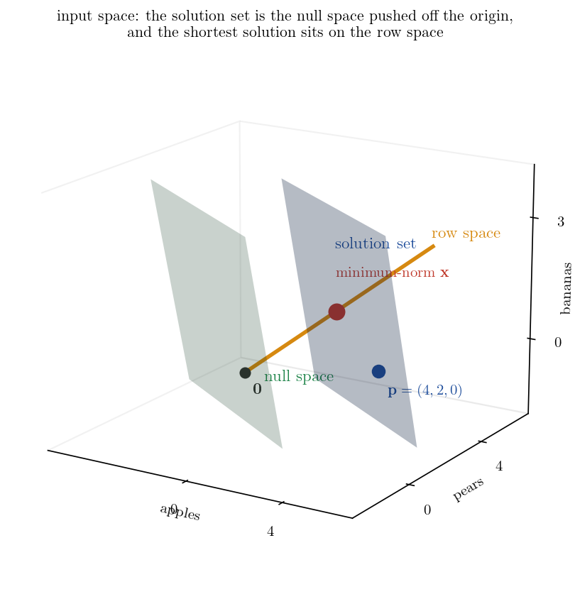
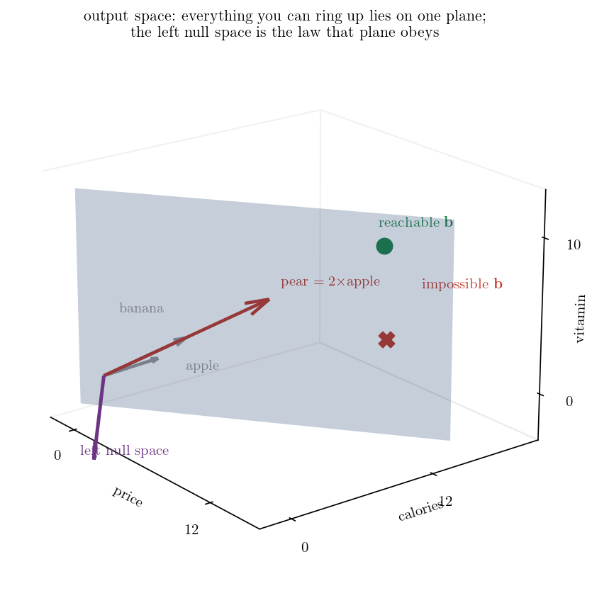
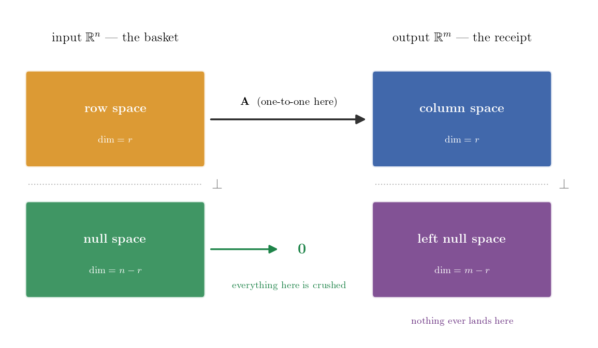
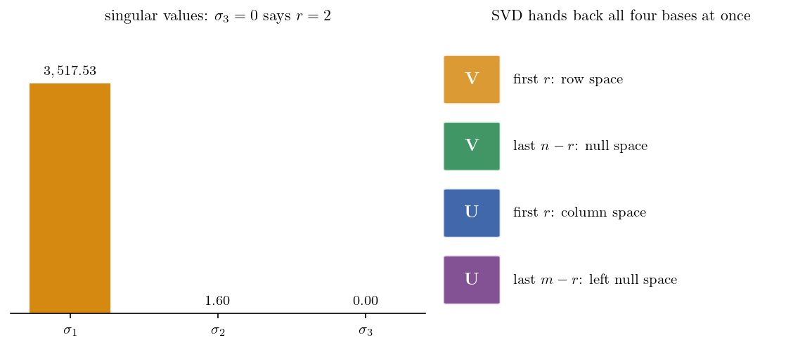

공부 ▷ 과일 장바구니와 영수증으로 정복하는 4대 부분공간
두 진행자가 주고받는 대본을 거의 그대로 싣고, 개념이 나오는 자리마다 수식과 실측 숫자와 그림을 끼워 넣었습니다. H 는 진행자, G 는 해설자입니다.
1. 프롤로그 — 지폐 한 장과 과일 가게
H. 상상해 보시죠. 여러분은 지금 동네 과일가게 앞에 딱 서 있습니다. 주머니에는 정확히 지폐 한 장이 들어 있고요.
G. 뭔가 아주 흥미로운 미션이 주어질 것 같은 상황이네요.
H. 맞습니다. 오늘 여러분의 미션은 아주 단순해요. 이 돈을 진짜 한 푼도 남기지 않고 딱 떨어지게 과일을 사는 겁니다. 과일 종류는 산처럼 쌓여 있는데, 여러분이 지켜야 할 조건은 오직 총액 하나뿐이죠.
G. 아, 그거 은근히 쉽지 않겠는데요. 선택할 수 있는 과일 변수가 너무 많잖아요.
H. 그러니까요. 환영합니다 여러분. 쏟아지는 정보의 홍수 속에서 복잡하고 난해한 지식들을 여러분만을 위해 가장 쉽고 완벽하게 압축해 드리는 오늘의 심층 분석 시간입니다.
G. 네, 오늘도 정말 기대가 됩니다.
H. 오늘 우리는 이 평범한 과일가게의 장바구니 하나로 데이터 과학과 기계학습의 근간이 되는 선형대수학의 4대 부분공간, 그리고 특이값 분해(SVD) 를 완벽하게 해부해 볼 겁니다. 자, 이 내용을 한번 풀어 볼까요?
한 문단으로 먼저
선형대수학을 배우는 궁극적인 목적은 단순히 복잡한 행렬 계산을 수행하는 데 있지 않습니다. 진짜 이유는 수많은 가능한 답 중에서 내게 가장 유리한(최적화된) 답을 골라내기 위해서입니다. 선형대수학은 이 복잡한 해의 구조를 두 쌍의 룸메이트 공간으로 나누어 설명합니다. 입력 쪽에 행공간과 영공간이 함께 살고, 출력 쪽에 컬럼스페이스와 좌영공간이 함께 삽니다.
그래서 일반해를 모두 알아야 합니다. 단순히 목표를 맞추는 것을 넘어, 무수히 많은 해 중에서 “가장 무게가 가벼운 장바구니” 를 찾거나 “탄소 배출을 최소화하는 조합” 을 골라내는 최적화가 가능해지기 때문입니다. 일반해는 우리가 선택할 수 있는 모든 가능성의 지도를 제공하며, 그중에서 가장 가성비 좋은 최적의 해를 찾을 수 있게 해 주는 마스터 플랜입니다.
실측 준비
이 대화를 끝까지 숫자로 따라갈 수 있도록 가게의 가격표를 먼저 고정해 둡니다. 이 가게의 과일은 가격뿐 아니라 칼로리와 비타민까지 함께 달고 다닙니다.
| 가격 | 칼로리 | 비타민 | |
|---|---|---|---|
| 사과 | 1,500원 | 150 kcal | 10 |
| 배 | 3,000원 | 300 kcal | 20 |
| 바나나 | 1,000원 | 100 kcal | 5 |
목표 금액은 12,000원입니다.
원음이 든 스펙(사과 1,000원·50kcal·비타민 10, 배 2,000원·100kcal·비타민 20, 바나나 500원·80kcal·비타민 5, 목표 1만 원)은 자기가 말한 조건들과 어긋납니다. 사과 4개와 배 2개가 8,000원이고, 배 1개와 바나나 3개의 값이 다르며, 바나나는 100원당 16kcal 라 뒤에 나올 법칙을 깹니다. 위 표는 원음의 네 조건(배 \(=2\times\)사과 · 사과 2개 \(=\) 배 1개 · 배 1개 \(=\) 바나나 3개 · 100원당 10kcal)을 전부 동시에 만족시키는 유일한 스펙이고, 그때 사과 4개와 배 2개가 12,000원이 됩니다.
2. 무수히 많은 정답, 그리고 베이스캠프
G. 좋습니다. 우리가 방금 설정한 이 상황, 그러니까 조건은 하나인데 선택할 수 있는 변수는 무수히 많은 이 상태를 어떻게 이해해야 할까요?
H. 우리가 학창 시절에 주로 풀었던 수학 문제들을 떠올려 보면, 변수의 개수랑 제약 조건 그러니까 방정식의 개수가 딱 맞아떨어지는 상황이었거든요.
G. 아, 그렇죠. 미지수가 두 개면 식도 무조건 두 개인 식이죠.
H. 네. 하지만 현실의 데이터는 전혀 그렇지 않습니다. 방금 말씀하신 과일가게의 상황처럼 지켜야 할 조건은 총액 딱 하나인데, 선택할 수 있는 과일 변수는 수십 가지가 넘잖아요. 사과, 배, 포도, 귤 엄청 많죠. 이런 상황을 우리는 과소 결정 시스템이라고 부릅니다. 제약보다 자유도가 훨씬 높기 때문에 단 하나의 유일한 정답이 존재하는 게 아니라, 무수히 많은 정답의 가능성이 열려 있는 상태인 거죠.
G. 아, 무수히 많은 정답이라. 그럼 이때 우리가 가장 먼저 해야 할 일은 뭘까요?
H. 일단 이 시스템이 애초에 달성 가능한 목표를 가지고 있는지, 그러니까 실현 가능성을 검증하는 겁니다.
G. 그러니까 일단 이것저것 장바구니에 막 담아보면서 총액이라는 조건이 물리적으로 맞춰지는지부터 확인해야 한다는 거군요.
H. 맞아요, 바로 그겁니다.
수식으로
계산대는 장바구니를 받아 금액 하나를 뱉는 사상입니다. 사과·배·바나나를 각각 \(x_1,x_2,x_3\) 개 담으면
\[ \mathbf{A}_1=\begin{pmatrix}1500 & 3000 & 1000\end{pmatrix}, \qquad \mathbf{A}_1\mathbf{x}=1500x_1+3000x_2+1000x_3=12000 \]
식은 하나, 미지수는 셋입니다. 이것이 부족 결정 시스템(underdetermined system)이고, 대본이 말한 과소 결정 시스템과 같은 말입니다.
G. 만약 제가 사과 네 개랑 배 두 개를 담았더니 운 좋게 정확히 목표 금액이 나왔다고 가정해 볼게요. 미션은 달성했네요. 수학적으로는 이게 어떤 의미를 가지나요?
H. 바로 그 지점이 전체 공간을 탐험하기 위한 첫 번째 베이스캠프를 구축한 순간입니다. 사과 네 개와 배 두 개라는 특정한 조합을 특수해라고 부르거든요.
G. 아, 특수해. 들어본 기억이 납니다.
H. 네. 이 특수해는 이 시스템에 최소한 하나의 현실적인 답이 존재한다는 걸 증명하는 역할을 해요. 아무리 훌륭한 시스템을 설계했더라도 이 특수해가 단 하나도 없다면, 애초에 도달할 수 없는 허상의 목표를 쫓고 있다는 뜻이 되니까요.
G. 네, 맞습니다. 우리가 흔히 선형대수학 배울 때 수식으로만 접하던 특수해가, 사실은 거대한 가능성의 세계로 진입하기 위한 입장권 같은 거였군요.
실측
\[ \mathbf{p}=(4,\,2,\,0), \qquad \mathbf{A}_1\mathbf{p}=1500\times 4+3000\times 2+1000\times 0=12000 \quad\checkmark \]
3. 영공간 — 0원짜리 교환
H. 정확한 비유네요. 하지만 여기서 합리적인 의문이 하나 듭니다. 아니, 사과 네 개 배 두 개로 목표를 맞췄으면 미션 끝난 거 아닌가요? 목표를 달성했는데 왜 굳이 다른 조합들을 찾기 위해서 더 깊은 수학적 공간을 탐구해야 하는 걸까요?
G. 아주 현실적인 관점이십니다. 만약 우리의 목표가 단순히 “어떻게든 총액만 쓰기” 라면 거기서 멈춰도 됩니다. 하지만 데이터 과학이나 머신러닝의 세계에서는 단순히 답을 찾는 걸 넘어서 가장 최적화된 답을 찾는 게 핵심이잖아요. 특수해 하나만 딱 쥐고 있다면 무수히 많은 다른 훌륭한 대안들을 모두 놓치게 되거든요.
H. 아, 최적화를 위해서 전체 지도가 필요하다는 거군요.
G. 맞아요. 여기서 바로 영공간이라는 아주 매력적인 개념이 등장합니다.
H. 영공간이요? 널 스페이스.
G. 네. 영공간은 아주 쉽게 말해서, 우리가 이미 달성한 결과 그러니까 그 12,000원을 전혀 훼손하지 않으면서 장바구니 안에서 내부적으로 일어나는 허용된 변화를 의미합니다.
H. 결과에 영향을 주지 않는 내부의 변화. 아, 이런 거군요. 장바구니를 가만히 들여다 보니까 사과 두 개의 가격이 배 한 개의 가격과 완전히 똑같다는 사실을 제가 깨달은 거예요. 그렇다면 제가 장바구니에서 사과 두 개를 빼내고 대신 배 한 개를 새로 집어넣는 행동을 취해도, 계산대에서 내야 할 총 결제 금액은 정확히 0원 변하게 됩니다. 여전히 목표는 단단하게 유지되는 거고요.
G. 그 과정을 정확히 짚어주셨어요. 결과를 0으로 만드는 조작, 그것이 바로 영공간의 본질입니다.
H. 아, 결과를 0으로 만드는 조작.
G. 네. 사과 네 개, 배 두 개라는 첫 번째 베이스캠프에다가 방금 말씀하신 “사과 두 개 빼고 배 한 개 넣기” 라는 0원짜리 변화를 우리가 원하는 만큼 자유롭게 더하거나 빼는 겁니다.
H. 계속 교환을 하는 거군요.
G. 그렇죠. 이 과정을 거치면 비로소 이 시스템에서 가능한 모든 장바구니 조합, 즉 일반해의 전체 지도를 완성할 수 있게 됩니다.
수식으로
\[ \ker(\mathbf{A}_1):=\bigl\{\mathbf{v} : \mathbf{A}_1\mathbf{v}=0\bigr\} \]
해 두 개를 빼 보면 왜 이 집합이 등장하는지가 바로 나옵니다.
\[ \mathbf{A}_1\mathbf{p}=12000, \quad \mathbf{A}_1\mathbf{q}=12000 \qquad\Longrightarrow\qquad \mathbf{A}_1(\mathbf{q}-\mathbf{p})=0 \]
해와 해의 차이는 언제나 커널 안에 있습니다. 거꾸로 \(\mathbf{v}\in\ker(\mathbf{A}_1)\) 이면 \(\mathbf{A}_1(\mathbf{p}+\mathbf{v})=12000+0\) 이라 \(\mathbf{p}+\mathbf{v}\) 도 해입니다. 둘을 합치면 해집합 전체가 한 줄로 적힙니다.
\[ \bigl\{\mathbf{x}:\mathbf{A}_1\mathbf{x}=12000\bigr\}=\underbrace{\mathbf{p}}_{\text{특수해}}+\underbrace{\ker(\mathbf{A}_1)}_{\text{동차해 전체}} \]
사과 두 개와 배 한 개를 맞바꾸는 행위가 실제로 커널 안에 있는지 확인해 보면
\[ \mathbf{u}_1=(-2,\,1,\,0), \qquad \mathbf{A}_1\mathbf{u}_1=-3000+3000+0=0 \quad\checkmark \]
H. 그 지도를 확보한다는 게 왜 그렇게 중요한지 이제 좀 명확해지네요.
G. 어떤 부분에서요?
H. 우리가 단순히 과일을 사는 게 목적이 아니라, 만약 “총액을 맞추면서도 가장 가벼운 장바구니를 만들어라” 혹은 “탄소 배출이 가장 적게 나오는 과일 조합을 찾아라” 같은 복합적인 최적화를 수행해야 한다면, 이 수많은 대안들의 목록이 반드시 필요하겠군요.
G. 정확합니다.
H. 머신러닝에서 과적합을 막기 위해서 파라미터의 크기 그러니까 노름이 가장 작은 해를 찾는 원리도 이 영공간을 탐색하는 과정이랑 완전히 맞닿아 있겠네요.
G. 맞아요. 모델의 예측 오차를 최소화하는 정답은 무수히 많지만, 그중에서 가장 단순하고 안정적인 모델을 골라내는 것이 바로 이 영공간이 제공하는 잉여 자유도를 활용하는 방법입니다.
실측 — 같은 12,000원, 다른 장바구니
\(\mathbf{p}\) 에 \(\mathbf{u}_1\) 과 \(\mathbf{u}_2=(0,-1,3)\) 을 섞어 만든 조합들입니다. 금액은 전부 같은데 개수와 노름이 갈립니다.
| 장바구니 (사과, 배, 바나나) | 금액 | 개수 | 노름 |
|---|---|---|---|
| \((4,\,2,\,0)\) | 12,000 | 6 | 4.4721 |
| \((2,\,3,\,0)\) | 12,000 | 5 | 3.6056 |
| \((0,\,4,\,0)\) | 12,000 | 4 | 4.0000 |
| \((4,\,1,\,3)\) | 12,000 | 8 | 5.0990 |
| \((0,\,3,\,3)\) | 12,000 | 6 | 4.2426 |
| \((1.4694,\,2.9388,\,0.9796)\) | 12,000 | — | 3.4286 |
맨 아래가 최소노름 해입니다. 목표를 맞추는 무수한 답 중에서 “가장 작은” 하나를 실제로 골라낸 것이고, 베이스캠프 하나만 쥐고 있었다면 이 비교 자체가 불가능합니다.
4. 기저와 널리티 — 최소한의 기본 동작
H. 야, 이거 재밌네요. 자, 그렇다면 우리의 장바구니 시스템을 조금 더 확장해 볼까요? 만약 과일가게에 사과랑 배뿐만 아니라 바나나까지 추가되었다고 상상해 보시죠.
G. 오, 변수가 3차원으로 늘어난 거군요. 바나나가 추가되면 영공간의 범위도 훨씬 넓어지겠네요.
H. 엄청나게 넓어지죠.
G. 사과랑 배를 교환하는 것뿐만 아니라 바나나랑 사과를 바꾸거나 셋을 동시에 섞어서 0원을 만드는 등 무수히 많은 교환 방식이 폭발적으로 생겨날 텐데, 이걸 전부 추적하는 건 불가능에 가깝지 않나요?
H. 언뜻 보면 무질서하게 팽창하는 것처럼 보이잖아요. 하지만 수학은 항상 그 속에서 최소한의 질서를 찾아냅니다.
G. 어떻게 질서를 찾죠?
H. 여기서 매력적인 부분은, 그 수많은 0원 교환법들도 사실 분석해 보면 아주 소수의 독립적인 기본 동작들을 이리저리 조합한 것에 불과하거든요.
G. 기본 동작이요?
H. 네. 이 독립적이고 핵심적인 기본 동작들의 세트를 우리는 영공간의 기저(basis)라고 부릅니다.
G. 그러니까 그 수만 가지 교환법을 다 외울 필요 없이, 예를 들어 기본 동작 A 는 사과 두 개를 빼고 배 한 개를 넣는 행동, 그리고 기본 동작 B 는 배 한 개를 빼고 바나나 세 개를 넣는 행동, 이렇게 정의해 두는 거군요.
H. 맞습니다, 딱 그거예요. 이 두 가지 동작 묶음만 가지고 있으면 이들을 적절히 섞어서 목표를 유지하는 모든 경우의 수를 다 만들어낼 수 있다는 거네요.
G. 네, 맞습니다. 그리고 방금 두 가지 기본 동작을 말씀하셨잖아요. 2 라는 숫자가 바로 이 장바구니 시스템이 가진 영공간의 차원, 즉 널리티가 됩니다.
H. 아, 널리티.
G. 네. 우리가 결과를 망가뜨리지 않고 마음대로 조작할 수 있는 자유도의 크기가 바로 2차원이라는 뜻이죠.
수식으로
\[ \mathbf{u}_1=\begin{pmatrix}-2\\1\\0\end{pmatrix}\ \text{(기본 동작 A)}, \qquad \mathbf{u}_2=\begin{pmatrix}0\\-1\\3\end{pmatrix}\ \text{(기본 동작 B)} \]
\[ \mathbf{A}_1\mathbf{u}_1=-3000+3000=0, \qquad \mathbf{A}_1\mathbf{u}_2=-3000+3000=0 \]
대본이 든 “사과 4개 빼고 배 2개 넣기” 나 “사과 2개 빼고 배 2개 넣고 바나나 3개 빼기” 같은 복잡한 교환도 전부 이 둘의 조합입니다.
\[ (-4,\,2,\,0)=2\mathbf{u}_1, \qquad (-2,\,2,\,-3)=\mathbf{u}_1-\mathbf{u}_2 \]
일반해는 이렇게 한 줄로 닫힙니다.
\[ \mathbf{x}=\mathbf{p}+s\,\mathbf{u}_1+t\,\mathbf{u}_2, \qquad s,t\in\mathbb{R} \]

입력 공간을 그림으로 본 것입니다. 초록 평면이 영공간이고, 그것을 원점 밖으로 밀어 놓은 파란 평면이 해집합입니다. 주황 직선은 잠시 뒤에 나올 행공간이고, 두 평면과 수직입니다. 최소노름 해가 정확히 그 주황 직선 위에 앉아 있습니다.
5. 랭크와 랭크-널리티 정리
H. 자유도의 크기인 널리티가 2차원이다. 그렇다면 입력된 정보가 결과를 만들어내는 데 실제로 기여하는 차원인 그 랭크의 개념도 자연스럽게 도출되겠군요.
G. 눈치가 아주 빠르신데요. 우리가 지금 사과·배·바나나라는 3차원의 변수를 장바구니에 담아서 계산대라는 시스템에 입력으로 쫙 밀어넣고 있잖아요. 하지만 계산대가 최종적으로 우리에게 보여주는 유의미한 결과물은 무엇인가 생각해 보면 아주 명확해지네요.
H. 그 유의미한 결과물이 과연 뭘까요? 과일의 색깔이나 당도 같은 정보일까요?
G. 아니요. 우리가 처음에 맞추기로 한 유일한 조건, 바로 영수증에 딱 찍히는 총 결제 금액 단 하나뿐입니다.
H. 그렇죠. 제가 장바구니 안에서 과일을 3차원으로 아무리 복잡하게 섞어도 계산대라는 함수를 통과하고 나면 결국 “얼마인가요” 라는 1차원적인 결과 선상에만 뚝 떨어지게 되는 거잖아요. 그렇다면 이 시스템의 랭크, 즉 유효한 출력 차원은 1차원이 되겠군요.
G. 완벽한 통찰입니다. 그리고 방금 여러분은 선형대수학에서 가장 우아한 공식 중 하나인 랭크-널리티 정리를 기하학적으로 완전히 증명해 내셨어요.
H. 제가요?
G. 네. 변수의 총 개수 \(n\), 여기서는 과일 3종류잖아요. 이 숫자는 언제나 랭크 더하기 널리티와 정확히 일치해야 합니다.
H. 아, 1이라는 결정된 결과물 그러니까 랭크에 2라는 허용된 자유도 널리티를 딱 더하면 처음에 투입한 전체 변수인 3이 된다. 와, 단순한 덧셈을 넘어선 완벽한 차원 보존의 법칙이네요.
G. 정말 아름답죠. 시스템에 투입된 변수들은 뼈대가 되어서 결과물을 형성하는 데 쓰이거나, 아니면 결과에 영향을 미치지 못하고 자유도로 빠져나가거나, 반드시 이 둘 중 하나의 운명을 겪으면서 전체 차원을 엄격하게 보존한다는 게 참 아름답습니다.
수식으로
\[ \operatorname{Rank}(\mathbf{A})+\operatorname{Nullity}(\mathbf{A})=n \]
- \(n\) (전체 변수의 수): 처음에 쥐고 있던 자원의 개수 — 사과, 배, 바나나 \(=3\)
- \(\operatorname{Rank}(\mathbf{A})\): 계산대를 거쳐 살아남은 의미 있는 결과의 차원 — 총 결제 금액 \(=1\)
- \(\operatorname{Nullity}(\mathbf{A})\): 결과에 영향을 주지 못하고 0으로 찌그러졌지만 그 안에서 마음대로 움직일 수 있는 잉여 자유도의 차원 — 기본 동작 A, B \(=2\)
\[ \underbrace{1}_{\text{결정된 결과물}}+\underbrace{2}_{\text{자유로운 교환 동작}}=\underbrace{3}_{\text{처음 가진 과일 종류}} \]
이것이 차원(정보) 보존의 법칙입니다.
6. 출력 공간 — 컬럼스페이스와 랭크의 비극
G. 이 보존의 법칙을 이해하는 건 데이터를 다루는 데 있어서 매우 강력한 직관을 제공합니다. 자, 지금까지는 우리가 주로 입력, 즉 장바구니 안에서 과일들을 어떻게 조합하느냐에 집중했거든요.
H. 네, 장바구니 얘기를 계속 했죠. 이제는 시선을 조금 옮겨서 출력된 결과물, 즉 영수증이 지배하는 공간으로 넘어가 볼까요?
G. 좋습니다. 과일가게 사장님이 시스템을 업그레이드해서, 이제 영수증에 총 결제 금액뿐만 아니라 담긴 과일들의 총 칼로리 그리고 총 비타민 수치까지 세 개의 항목이 출력된다고 한번 가정해 봅시다.
H. 출력 공간 자체가 1차원에서 3차원으로 확장이 된 거군요. 여기서부터 선형대수학의 세 번째 공간인 컬럼스페이스(열공간)가 무대로 올라오겠네요.
G. 네, 맞습니다. 컬럼스페이스는 우리가 과일들을 무한히 이리저리 섞어서 계산대에 올렸을 때 이 3차원 영수증에 최종적으로 찍혀 나올 수 있는 모든 가능한 결과값, 즉 도달 가능한 한계 영역을 뜻하는 거 맞죠? 과일 하나하나가 고유한 특성을 담은 열벡터가 되는 셈이고요.
H. 정확합니다.
수식으로
과일 하나가 가진 고유 스펙이 행렬의 한 열이 됩니다.
\[ \mathbf{A}=\begin{pmatrix}1500 & 3000 & 1000\\ 150 & 300 & 100\\ 10 & 20 & 5\end{pmatrix} \qquad \text{(행: 금액·칼로리·비타민 / 열: 사과·배·바나나)} \]
G. 그럼 입력 변수도 세 개고 영수증의 출력 항목도 세 개니까, 우리는 3차원 공간상에 어떤 영수증 결과값이든 마음대로 다 만들어 낼 수 있을까요?
H. 스펙을 가만히 살펴보니까 아주 흥미로운 패턴이 하나 보입니다.
G. 어떤 패턴이죠?
H. 배의 스펙이 정확히 사과 스펙의 2배잖아요.
G. 아, 예리하시네요. 수학적 개념을 빌리자면 이 시스템 안에서 배는 사과와 선형 종속 관계에 있습니다. 즉 배는 단지 거대한 사과일 뿐이지, 출력 공간에서 완전히 새로운 차원의 방향성을 만들어내는 데는 아무런 기여를 하지 못하는 셈이죠. 그 통찰이 바로 데이터의 실질적인 차원을 파악하는 핵심이에요. 겉보기에는 사과, 배, 바나나 이렇게 세 개의 축이 존재하는 것 같지만, 배는 사과가 만들어내는 궤도에 단 한 치도 벗어나지 못하거든요. 완전히 종속되어 있으니까요.
H. 맞습니다. 따라서 이 과일가게 시스템이 실제로 뻗어나갈 수 있는 유효한 랭크는 3이 아니라 2로 축소가 됩니다. 영수증 정보는 3차원이지만 우리가 만들어 낼 수 있는 실제 결과물은 3차원 공간 전체를 채우지 못하고 2차원 평면(납작한 종이 한 장) 위에 갇히게 되는 거죠.
실측 — 랭크의 기하학적 비극
\[ \text{배 열}=(3000,\,300,\,20)=2\times(1500,\,150,\,10)=2\times\text{사과 열} \]
\[ n=3, \qquad \operatorname{Rank}(\mathbf{A})=2, \qquad \operatorname{Nullity}(\mathbf{A})=1, \qquad \dim(\text{좌영공간})=m-r=1 \]
노름으로 재도 배는 사과의 정확히 2배입니다 — \(\|\text{사과 열}\|=1507.51\), \(\|\text{배 열}\|=3015.03\).
7. 좌영공간 — 절대 깰 수 없는 물리 법칙
G. 도달 가능한 영역이 제한된다는 건 역으로 도달 불가능한 목표도 존재한다는 뜻이군요. 여기서 제가 조금 짓궂은 진상 손님이 되어서 불가능한 목표를 한번 요구해 보겠습니다.
H. 네, 한번 해 보시죠.
G. “사장님, 총액은 딱 5,000원에 맞추고 칼로리는 2,000kcal 로 아주 든든하게 하되, 제가 비타민 알레르기가 있어서 총 비타민은 반드시 0으로 맞춰 주세요” 라고 주문한다면 어떨까요? 이 영수증 조합은 달성 가능한가요?
H. 물리적으로 절대 불가능한 요구입니다. 왜냐하면 손님이 제시한 그 5,000원·2,000kcal·비타민 0 이라는 타깃 벡터는 이 과일가게 시스템이 허용하는 컬럼스페이스 평면 바깥에 존재하기 때문이에요.
G. 아, 평면 바깥에.
H. 네, 해가 하나도 존재하지 않는 불능 상태에 빠지는 거죠. 그런데 우리가 이 직관적인 불가능성을 수학적으로 어떻게 완벽하게 증명할 수 있을까요? 여기서 네 번째 공간인 좌영공간이 등장합니다.
G. 좌영공간. 보통 수식으로만 접하면 너무 추상적인데, 이 과일가게 비유에 대입하면 영수증이 절대 깰 수 없는 내재적 제약 조건 혹은 일종의 물리 법칙이라고 볼 수 있겠네요.
H. 맞아요, 아주 좋은 해석입니다. 예를 들어서 이 가게에서 파는 모든 과일들이 선천적으로 금액 100원당 정확히 10kcal 를 동반한다는 어떤 숨겨진 비율 규칙을 공유하고 있다고 상상해 보죠. 그렇다면 제가 과일을 어떻게 섞든 간에 영수증에는 반드시 “칼로리 빼기 금액 곱하기 0.1 은 0이다” 라는 룰이 성립해야만 합니다. 그 숨은 룰 자체를 벡터로 표현한 것, 그런 제약 조건의 벡터들이 모여 사는 곳이 바로 이 좌영공간이에요.
G. 그렇군요.
H. 이 좌영공간의 가장 핵심적인 성질은, 우리가 앞서 만든 그 도달 가능한 영역 즉 컬럼스페이스와 기하학적으로 완벽하게 90도를 이루면서 직교한다는 점입니다.
수식으로
\[ \mathbf{y}^{\top}=\begin{pmatrix}-0.1 & 1 & 0\end{pmatrix}, \qquad \mathbf{y}^{\top}\mathbf{A}=\begin{pmatrix}0 & 0 & 0\end{pmatrix} \]
세 열 모두에 대해 \(-0.1\times(\text{금액})+1\times(\text{칼로리})=0\) 이 성립합니다. 예를 들어 사과 열은 \(-0.1\times 1500+150=0\) 입니다.
도달 가능한 영수증인지 아닌지는 이 벡터와 내적 한 번으로 판정됩니다.
\[ \mathbf{y}\cdot(12000,\,1200,\,80)=-1200+1200+0=0 \quad\checkmark\ \text{(사과 4 + 배 2 의 영수증)} \]
\[ \mathbf{y}\cdot(5000,\,2000,\,0)=(-0.1\times 5000)+(1\times 2000)+(0\times 0)=1500\neq 0 \quad\times \]
G. 직교한다는 것이 현실 세계에서는 물리적 모순을 의미하는 거군요. 아까 제가 5,000원에 2,000kcal 를 달라고 했던 진상 손님의 요구를 생각해 보면, 금액 100원당 10kcal 라는 좌영공간의 룰에 따르면 5,000원이면 당연히 500kcal 가 되어야 정상이잖아요.
H. 그렇죠?
G. 그런데 2,000kcal 를 요구했으니 이 가게를 지배하는 숨은 물리 법칙과 정면으로 충돌하는 겁니다. 내적을 계산할 것도 없이, 타깃이 시스템의 근본적인 룰과 직교하지 않는다는 것 즉 컬럼스페이스 바깥에 있다는 명백한 증거네요.
H. 그 직관적인 모순을 찾아내는 것이 좌영공간의 강력함입니다.

출력 공간을 그림으로 본 것입니다. 회색 평면이 만들어낼 수 있는 영수증 전부, 즉 컬럼스페이스입니다. 사과·배·바나나 화살표가 전부 그 평면 안에 누워 있고, 배는 사과와 같은 방향으로 두 배 길 뿐입니다. 보라색 화살표가 평면에 수직인 좌영공간이고, 붉은 X 로 찍힌 진상 손님의 요구는 평면에서 떨어져 있습니다.
실측 — 계산대를 업그레이드하면 자유가 줄어든다
같은 랭크-널리티 정리를 두 계산대에 각각 대입해 보면 이렇게 갈립니다.
| 계산대 | \(n\) | 랭크 | 널리티 | 살아남은 기본 동작 |
|---|---|---|---|---|
| 금액만 | 3 | 1 | 2 | A, B |
| 금액·칼로리·비타민 | 3 | 2 | 1 | A 만 |
칼로리는 금액에 딸린 정보라 새 제약을 걸지 못하지만 비타민은 겁니다.
\[ \mathbf{A}\mathbf{u}_1=(0,\,0,\,0) \qquad\qquad \mathbf{A}\mathbf{u}_2=(0,\,0,\,-5) \]
배 1개를 빼고 바나나 3개를 넣으면 금액도 칼로리도 그대로인데 비타민이 5만큼 줄어듭니다. 기본 동작 B 가 더 이상 공짜가 아닙니다.
8. 행공간 — 순수한 노력, 그리고 나침반
H. 자, 이제 우리는 출력 공간 그 영수증이 가진 도달 가능한 한계와 깰 수 없는 물리 법칙을 모두 확인했습니다.
G. 네, 출력 쪽은 다 정리가 됐네요. 다시 우리의 원래 위치인 입력 공간, 즉 장바구니로 돌아가서 마지막 퍼즐 조각을 맞춰 볼 차례입니다. 앞서 우리가 영공간을 “결과를 1원도 바꾸지 못하는 내부의 잉여 변화” 이라고 정의했었잖아요.
H. 네, 0원 교환법이요.
G. 그렇다면 논리적으로 그것과 완벽하게 반대되는 성질을 가진 공간도 존재해야 하지 않을까요?
H. 당연하죠. 헛수고가 있다면 100% 결과에 기여하는 순수한 노력의 공간도 있어야 합니다. 그것이 바로 4대 부분공간의 마지막을 장식하는 행공간(row space)이군요.
G. 맞습니다. 행공간은 출력 쪽에 사는 컬럼스페이스와 다르게, 영공간과 함께 입력 쪽인 장바구니 공간에 거주하고 있는 거네요.
H. 그렇습니다. 우리가 장바구니에 아무렇게나 과일 벡터 \(\mathbf{x}\) 를 딱 집어넣더라도, 수학적으로 이 벡터는 항상 두 가지의 명확한 성분으로 쪼개집니다.
G. 두 가지 성분으로요?
H. 네. 영수증의 숫자를 실질적으로 움직이는 유효한 순수 노력, 즉 행공간 성분과, 아무리 요동쳐도 결과에 영향을 주지 못하고 자기들끼리 상쇄되어서 날아가는 헛수고, 즉 영공간 성분으로 분해되죠. 그리고 이 두 공간은 장바구니 안에서 완벽하게 직교하고 있습니다.
수식으로
\[ \mathbf{x}=\underbrace{\mathbf{x}_{\text{row}}}_{\text{순수 노력}}+\underbrace{\mathbf{x}_{\text{null}}}_{\text{헛수고}}, \qquad \mathbf{x}_{\text{row}}\perp\mathbf{x}_{\text{null}} \]
두 공간에 한 줄짜리 별명을 붙이면 이렇습니다. 행공간은 “진짜 유효한 노력”, 영공간은 “결과에 영향이 없는 잉여 노력”.
| 구분 | 의미 | 결과에 미치는 영향 | 기하학적 특징 |
|---|---|---|---|
| 행공간 | 유효한 노력 성분 | 영수증 숫자를 직접적으로 변화시킴 | 영공간과 직교 |
| 영공간 | 잉여·자유도 성분 | 결과값에 변화를 주지 않음 (상쇄됨) | 행공간과 직교 |
G. 그래서 이 모든 게 대체 무슨 의미일까요? 우리의 장바구니가 직교하는 두 성분으로 딱 쪼개진다는 이 우아한 기하학적 사실이, 데이터를 다루는 현실에서 우리에게 어떤 실질적인 무기를 쥐어 주는 건가요?
H. 아주 중요한 무기죠. 가장 빠르고 효율적으로 목표에 도달하는 최단 경로를 알려주는 나침반이 됩니다.
G. 나침반요?
H. 영수증의 결과를 진짜 바꾸고 싶다면 영공간 방향으로는 단 한 발자국도 움직일 필요가 없어요. 오직 직교하는 행공간 방향으로만 쭉 전진해야 하죠.
G. 아, 헛수고는 빼고요.
H. 그렇죠. 만약 목표를 달성하는 수천 가지 장바구니 중에서 영공간 성분이 정확히 0% 인, 오로지 순수한 행공간만으로 이루어진 장바구니를 골라낸다면 어떻게 될까요?
G. 군더더기가 하나도 없는 상태가 되겠네요.
H. 맞습니다. 그것이 바로 군더더기 없이 가장 무게가 가벼운, 기계학습이 그토록 찾아 헤매는 최적화의 결정체인 최소 노름 해가 됩니다.
실측 — 최소 노름 해가 정말 행공간 위에 있는가
이 계산대의 행공간은 가격 벡터 \((1500,\,3000,\,1000)\) 이 그리는 직선입니다. 최소노름 해를 그 벡터로 나눠 보면
\[ \frac{1.4694}{1500}=\frac{2.9388}{3000}=\frac{0.9796}{1000}=0.00097959 \]
세 비율이 정확히 같습니다. 최소노름 해는 가격 벡터의 상수배, 즉 행공간 위의 점입니다. 영공간 성분이 0% 라는 말이 이 한 줄로 확인됩니다.
G. 헛수고를 완전히 발라낸 순수한 핵심의 상태. 자, 지금까지 우리는 장바구니 속의 순수 노력과 헛수고, 그리고 영수증 공간의 도달 가능한 가능성과 내재적 한계라는 네 개의 방을 모두 들어갔습니다.

네 개의 방을 한 장에 담은 것입니다. 입력 쪽에서 행공간과 영공간이 직교하고, 출력 쪽에서 컬럼스페이스와 좌영공간이 직교합니다. \(\mathbf{A}\) 는 행공간을 컬럼스페이스로 일대일로 옮기고, 영공간은 통째로 \(\mathbf{0}\) 으로 뭉갭니다. 좌영공간에는 아무것도 도착하지 않습니다.
\[ n=\underbrace{r}_{\text{행공간}}+\underbrace{n-r}_{\text{영공간}}, \qquad m=\underbrace{r}_{\text{컬럼스페이스}}+\underbrace{m-r}_{\text{좌영공간}} \]
9. SVD — 선형대수학의 하이라이트
H. 네, 정말 긴 여정이었죠. 하지만 머릿속으로 상상하는 것과 다르게, 수천만 개의 픽셀이나 텍스트가 뒤엉켜 있는 현실의 거대한 데이터 행렬 속에서 이 네 개의 방을 깔끔하게 분리해내는 건 완전히 다른 차원의 문제일 텐데요. 이를 해결할 방법이 있나요?
G. 물론입니다. 지금까지 우리가 나눈 이 모든 선형대수학의 서사시는, 사실 궁극의 마스터키 하나를 온전히 이해하기 위한 빌드업 과정이었다고 해도 과언이 아닙니다.
H. 마스터키요?
G. 네. 바로 데이터의 숨은 뼈대를 발라내는 해부도, 특이값 분해 일명 SVD 입니다.
H. 여기가 정말 흥미로워지는 지점인데요. SVD 는 공식을 보면 어떤 행렬 \(\mathbf{A}\) 를 \(\mathbf{U}\) 와 \(\boldsymbol{\Sigma}\) 와 \(\mathbf{V}^{\top}\) 라는 세 개의 행렬의 곱으로 분해한다고 되어 있죠. 마치 빛을 무지개색으로 쪼개는 프리즘 같기도 한데요.
G. 네, 아주 비슷한 역할입니다.
H. 이 마법 같은 분해 과정이 우리의 과일가게 모델에서는 구체적으로 어떤 역할을 하는 건가요?
G. SVD 는 매우 복잡해 보이는 선형 변환을 회전 → 크기 조절 → 다시 회전이라는 세 단계의 투명한 기하학적 과정으로 명쾌하게 분절해 냅니다.
H. 세 단계로 쪼개는군요.
G. 순서대로 따라가 보죠. 먼저 입력 데이터에 가장 먼저 적용되는 맨 뒤의 행렬 \(\mathbf{V}^{\top}\) 입니다.
H. 이 녀석이 바로 우리의 장바구니를 정돈해 주는 입력 공간의 문지기 역할을 하는 거군요. 손님들이 아무렇게나 담아온 복잡한 과일 데이터를 딱 받아서, 그 안에 섞여 있는 방향성을 쫙 재정렬해 주겠네요.
G. 정확합니다. 수백만 개의 얽히고설킨 입력 데이터를 받아서 직교하는 완벽한 기준으로 공간 자체를 딱 회전시킵니다. “데이터의 이 부분은 결과에 진짜 기여하는 순수 노력이니 행공간 축에 정렬하고, 이 부분은 아무 짝에도 쓸모없는 헛수고이니 영공간 축에 정렬하라” 면서 입력의 성질을 명확하게 쪼개서 분류해내는 1차 필터링 작업이죠.
H. 노력과 헛수고를 칼같이 축에 맞춰 정렬해 놓는다. 그렇게 정돈된 데이터가 그다음 가운데 있는 \(\boldsymbol{\Sigma}\) 행렬로 넘어가게 되겠네요. \(\boldsymbol{\Sigma}\) 는 대각선에만 값이 있고 나머지는 다 0인 특수한 형태잖아요. 여기서 스케일링, 즉 가치 평가가 일어나는 건가요?
G. 그렇습니다. \(\boldsymbol{\Sigma}\) 는 아주 냉혹하고 정확한 가치 평가자입니다. 앞서 \(\mathbf{V}^{\top}\) 가 걸러낸 성분들에 각각 특이값이라는 가중치를 딱 곱해 줍니다.
H. 가중치를 주면 어떻게 변하죠?
G. 목표 달성에 크게 기여하는 행공간의 핵심 성분들에는 큰 특이값을 곱해서 그 영향력을 쫙 증폭시키죠. 반면에 아무리 발버둥쳐도 결과에 기여하지 못하는 영공간의 헛수고 성분들에는 자비 없이 0을 곱해서 그 존재 자체를 아예 소멸시켜 버립니다.
H. 군더더기를 그냥 물리적으로 완벽하게 제거해 버리는 과정이군요.
G. 네, 흔적도 없이 날려버리죠. 자, 이제 쓸모없는 성분은 모두 0으로 날아가고 진짜 가치 있는 알맹이들만 남은 상태로 마지막 맨 앞에 있는 \(\mathbf{U}\) 행렬을 만나게 됩니다.
H. 이 녀석은 출력 공간, 즉 영수증 쪽에 축을 정렬하는 역할이겠죠.
G. 네, 마지막 출력 정리 단계입니다. \(\boldsymbol{\Sigma}\) 를 거치면서 증폭되거나 소멸된 데이터들을 이제 영수증 공간에 직교하는 기준점에 맞춰서 깔끔하게 인쇄하는 겁니다.
H. 어떻게 인쇄를 하나요?
G. “지금 넘어온 이 데이터들은 우리가 실제로 만들어 낼 수 있는 타당한 결과인 컬럼스페이스 쪽에 딱 배치하고, 이 공간은 우리 가게의 제약 조건상 절대 도달할 수 없는 오류 구역인 좌영공간이야” 라면서 최종 결과물의 맵을 쫙 펼쳐서 보여 주는 것이죠.
H. 입력의 질서를 딱 잡아주고, 알맹이만 남겨서 가치를 부여한 뒤에, 출력의 가능성 위에 가지런히 펼쳐 준다.
G. 완벽한 요약이네요.
수식으로
\[ \mathbf{A}=\mathbf{U}\boldsymbol{\Sigma}\mathbf{V}^{\top} \]
| SVD 구성요소 | 기하학적 의미 | 대응되는 4대 공간 |
|---|---|---|
| \(\mathbf{V}\) (우특이벡터) | 입력 공간의 회전 | 앞의 \(r\) 개는 행공간, 뒤의 \(n-r\) 개는 영공간 기저 |
| \(\boldsymbol{\Sigma}\) (특이값) | 축 방향 크기 조절 | 각 성분이 결과에 미치는 가중치(중요도) 결정 |
| \(\mathbf{U}\) (좌특이벡터) | 출력 공간의 회전 | 앞의 \(r\) 개는 컬럼스페이스, 뒤의 \(m-r\) 개는 좌영공간 기저 |
복잡하게 얽힌 데이터를 정규직교기저로 깔끔하게 빗질해 주는 셈입니다.
실측 — SVD 가 손으로 찾은 것을 그대로 돌려준다
우리 과일가게 행렬의 특이값입니다.
\[ \sigma_1=3517.5307, \qquad \sigma_2=1.5972, \qquad \sigma_3=0 \]
\(\sigma_3=0\) 이라는 사실이 곧 랭크가 2 라는 선언입니다. 그리고 마지막 특이벡터 둘을 손으로 찾아 놓은 것과 나란히 놓으면
| SVD 가 준 것 | 우리가 손으로 찾은 것 | |
|---|---|---|
| 영공간 (\(\mathbf{V}\) 마지막 열) | \((0.8944,\,-0.4472,\,0)\) | 기본 동작 A \(\ \mathbf{u}_1/\|\mathbf{u}_1\|=(-0.8944,\,0.4472,\,0)\) |
| 좌영공간 (\(\mathbf{U}\) 마지막 열) | \((-0.0995,\,0.995,\,0)\) | 100원당 10kcal 법칙 \(\ \mathbf{y}/\|\mathbf{y}\|=(-0.0995,\,0.995,\,0)\) |
사과 두 개와 배 한 개를 맞바꾸는 기본 동작도, 100원당 10kcal 라는 법칙도, 특이값 분해 하나면 사람이 눈치채지 못해도 자동으로 튀어나옵니다. 영공간 쪽은 부호만 반대인데, 방향이 뒤집혔을 뿐 같은 직선입니다.

H. SVD 가 왜 선형대수학의 마스터키로 불리는지 그 기하학적 아름다움이 이제야 눈앞에 정말 선명하게 그려집니다. 지금 이 심층 분석을 듣고 계신 여러분도, 그저 알파벳 세 개의 곱셈이었던 공식이 어떻게 데이터를 걸러내는 거대한 시스템으로 작동하는지 완벽하게 느끼셨을 겁니다. 이것을 더 큰 그림과 연결해 보면 현대 데이터 과학을 관통하는 거대한 패러다임을 이해할 수 있습니다.
G. 큰 그림이라면 어떤 걸까요?
H. 예를 들어 주차장에 있는 수만 장의 자동차 번호판 이미지나 언어 모델이 학습하는 방대한 텍스트 데이터를 한번 생각해 보세요. 현실의 데이터는 언제나 빛의 반사, 카메라 노이즈, 불필요한 조사나 어미 같은 막대한 노이즈를 포함하고 있거든요. 이 데이터를 거대한 행렬로 딱 만들고 SVD 를 돌리면 어떻게 될까요?
G. 아, SVD 가 그 막대한 데이터 속에서 어떤 축이 진짜 자동차의 윤곽선과 번호판 글씨인지 — 그러니까 행공간이죠 — 그리고 어떤 축이 단순한 조명의 깜빡임이나 카메라의 노이즈, 즉 영공간인지 그 중요도 순으로 완벽하게 줄을 세워 주겠군요.
H. 바로 그겁니다.
G. 그러면 우리는 특이값이 작은 꼬리 부분의 성분들, 즉 영공간에 가까운 헛수고 데이터들을 과감하게 싹둑 잘라내 버릴 수 있겠네요.
H. 네. 그 과정을 우리는 차원 축소 혹은 주성분 분석(PCA) 이라고 부릅니다. 인공지능이 무거운 연산을 피하고 핵심 패턴만 빠르게 학습할 수 있게 만드는 아주 강력한 비밀 무기죠.
G. 정말 대단하네요. 수학을 단순히 계산기를 두드리는 도구로 쓰던 시대를 지나서, 데이터가 가진 기하학적 구조 자체를 꿰뚫어보는 시대에서도 이 도달 가능한 정보와 무의미한 자유도를 분리해내는 SVD 의 철학은 가장 중요한 뼈대로 작용하고 있습니다.
🎯 최종 요약: 선형대수학 4대 부분공간
| 공간 | 사는 곳 | 차원 | 과일 가게에서 | 한 줄 |
|---|---|---|---|---|
| 행공간 | 입력 \(\mathbb{R}^{n}\) | \(r\) | 영수증을 실제로 바꾸는 방향 | 유효한 노력 |
| 영공간 | 입력 \(\mathbb{R}^{n}\) | \(n-r\) | 금액이 안 변하는 교환들 | 잉여 자유도 |
| 컬럼스페이스 | 출력 \(\mathbb{R}^{m}\) | \(r\) | 만들어낼 수 있는 영수증 전부 | 도달 가능 범위 |
| 좌영공간 | 출력 \(\mathbb{R}^{m}\) | \(m-r\) | 100원당 10kcal 같은 법칙 | 절대 깰 수 없는 제약 |
특수해가 베이스캠프를 치고, 영공간이 움직일 폭을 알려 주고, 컬럼스페이스가 애초에 도달 가능한지를 정하고, 좌영공간이 왜 불가능한지를 증명합니다. 넷을 다 알아야 답을 찾는 것에서 답을 고르는 것으로 넘어갈 수 있습니다.
10. 에필로그 — 우리 삶 속의 영공간은 무엇일까
H. 여러분 정말 놀랍지 않습니까? 복잡한 수식이나 어지러운 칠판 하나 없이, 그저 지폐 한 장과 과일 장바구니 하나로 시작된 우리의 상상이 어느새 최첨단 인공지능과 데이터 과학의 심장부까지 쫙 맞닿았습니다.
G. 저도 설명하면서 참 짜릿하네요.
H. 우리는 입력을 분류하고, 출력의 한계를 이해하며, 효율적인 순수 노력과 상쇄되어 사라지는 헛수고를 가려내는 선형대수학의 거대한 네 개의 방을 완벽하게 탐험해 냈습니다.
G. 네. 그리고 이는 매우 중요한 질문을 던집니다. 우리가 오늘 다룬 선형대수학과 SVD 의 원리는 단지 교과서나 인공지능 서버 안에만 갇혀 있는 그런 기계적인 논리가 아니거든요.
H. 그럼 또 어떤 의미가 있을까요?
G. 수많은 변수 속에서 옥석을 가려내고 본질에 딱 집중하는 것. 그것은 결국 우리가 세상을 인지하고 이 복잡한 일상을 살아가는 방식 그 자체와 너무나도 닮아 있죠.
H. 와, 4대 부분공간의 원리를 삶에 비유하다니 정말 가슴이 뛰는 접근인데요. SVD 가 방대한 데이터 행렬 속에서 과감하게 0을 곱해서 날려버려야 할 쓸모없는 노이즈를 찾아내고, 진정으로 결과값을 바꾸는 핵심 정보에만 높은 가중치를 부여하는 것처럼 말이죠.
G. 그렇습니다. 우리가 매일 내리는 수많은 의사결정과 행동들 속에도 분명 존재할 겁니다. 아무리 에너지를 쏟아붓고 요란하게 움직여도 결국 우리가 도달하고자 하는 목적지나 결과물에는 단 1% 의 기여도 하지 못하고 우리의 시간과 에너지만 갉아먹는 그런 부분들이요.
H. 네. 우리 삶 속의 영공간은 과연 무엇일까요?
G. 만약 오늘 여러분의 복잡한 일상이라는 거대한 데이터를 SVD 라는 마스터키에 밀어 넣는다면 어떨까요? 무엇이 가치 없는 노이즈로 싹둑 잘려나가게 될지, 그리고 거품이 걷힌 후 여러분의 삶을 지탱하는 진정한 뼈대, 그 행공간에는 어떤 모습이 남아 있게 될지 한번 상상해 보시기 바랍니다.
H. 네, 아주 의미 있는 여운이 될 것 같습니다.
G. 장바구니 하나에서 시작된 이 수학적 통찰이 여러분의 남은 하루를 조금 더 명료하고 선명하게 만들어 주는 작은 프리즘이 되기를 진심으로 바랍니다. 가장 완벽하게 압축된 지식의 여정, 오늘의 심층 분석은 여기서 마치겠습니다. 함께 탐험해 주신 여러분 고맙습니다.